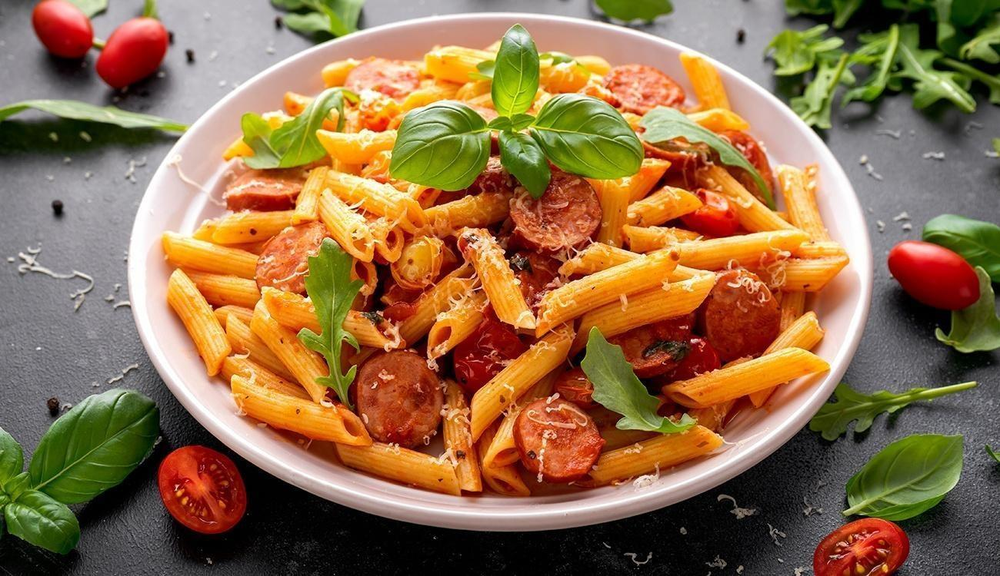

Macarrão com Salsicha
Document
Aqui está a comida quando os Universatários tem tempo
Macarrão com salsicha, porque eles não tiveram tempo de aprender outra coisa

Sem muita enrolação, porque universitários tem tempo, mas nem tanto, vamos a receita!
Ingredientes:
- 1 Pacote de Macarrão
- Um pouco de Salsicha (Quantidade a gosto)
- alho
- cebola (Opcional)
- 2 Tomates
- Pimentão(Opcional)
- 1 caldo de carne
- 1 colher (sopa) de molho inglês
- 3 colheres (sopa) de requeijão de bisnaga
- 2 colheres (sopa) de requeijão de copo
- 1 caixa de creme de leite
- Sal a gosto
- ½ lata de molho de tomate
- cheiro verde a gosto
Modo de preparo:
- Cozinhe o macarrão com uma pitada de sal.
- Na panela, coloque o óleo, o alho e a cebola. Refogue.
- Acrescente o tomate e o pimentão verde e refogue.
- Coloque a azeitona e a salsicha. Refogue bem.
- Acrescente um caldo de carne, o molho inglês, o molho de tomate e 200 ml de água.
- Deixe cozinhar por, aproximadamente, 5 minutos.
- Acrescente o creme de leite, o requeijão de bisnaga e o requeijão de copo.
- Misture até incorporar tudo no recheio e ficar uniforme.
- Ainda em fogo baixo, acrescente a cebolinha e o macarrão. Mexa bem.
- Está pronto para servir.
É claro que eu peguei essa receita da internet, ou você que universitários sabem cozinha?
ps: leia a página de notas.